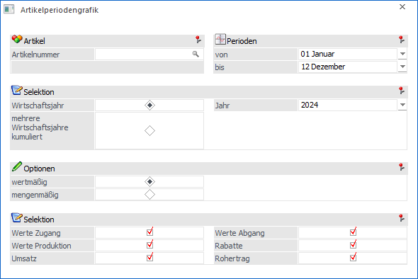
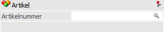
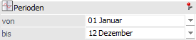
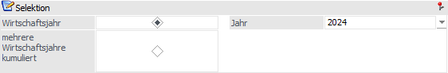
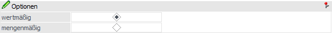
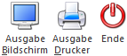

Im Menüpunkt…
1 WinLine FAKT
1 Auswertungen
1 Artikellisten
1 Artikelperiodengrafik
… erhält man eine Übersicht über die Artikelbewegungen, wobei die Auswertung auf Basis des aktuellen Wirtschaftsjahres oder auf Basis von mehreren Jahren durchgeführt werden kann.

Die Ausgabe kann durch folgende Kriterien eingeschränkt bzw. beeinflusst werden:
Artikel

Ø Artikelnummer
Eingabe der Artikelnummer, die ausgewertet werden soll.
Perioden

Ø Perioden von / bis
Aus den Auswahllistboxen können die Perioden ausgewählt werden, die ausgewertet werden sollen. Für die Auswertung werden die Werte der einzelnen Perioden zusammengefasst.
Selektion

Ø Wirtschaftsjahr
Ist die Option "Wirtschaftsjahr" ausgewählt, kann aus der nebenstehenden Auswahlliste das Jahr ausgewählt werden, welches ausgewertet werden soll. Dabei stehen jene Wirtschaftsjahre zur Verfügung, die im sich im aktuellen Mandanten befinden (zusammengeführt wurden).
Ø mehrere Wirtschaftsjahre kumuliert
Ist diese Option aktiviert, können mehrere Wirtschaftsjahre nebeneinander ausgewertet werden, wobei Sie für jedes Wirtschaftsjahr eine eigene Grafik erhalten. Aus der nebenstehenden Auswahllistbox können Sie die Wirtschaftsjahre auswählen, die Sie auswerten möchten.
Optionen

Ø Wertmäßig
Ist diese Option aktiv, werden die Artikel wertmäßig, also nach den Umsatzzahlen, ausgewertet. Wurde diese Option gewählt, können Sie noch entscheiden, welche Werte auf der Auswertung angezeigt werden sollen:
ü Werte Zugang
ü Rabatte
ü Werte Abgang
ü Umsatz
ü Werte Produktion
ü Rohertrag
Ø Mengenmäßig
Ist diese Option aktiv, werden die Artikel nach den Stückzahlen ausgewertet. Wurde diese Option gewählt, so kann noch entschieden werden, welche Werte auf der Auswertung angezeigt werden sollen:
ü Menge Zungen
ü Menge Abgang
ü Menge Produktion
Buttons

Ø Ausgabe Bildschirm
Mit Hilfe des Buttons "Ausgabe Bildschirm" oder der Taste F5 wird die grafische Auswertung am Bildschirm ausgegeben.
Ø Ausgabe Drucker
Durch Anwahl des Buttons "Ausgabe Drucker" wird die grafische Auswertung am Drucker ausgegeben.
Ø Ende
Durch Drücken des Buttons "Ende" bzw. der Taste ESC wird das Fenster geschlossen.